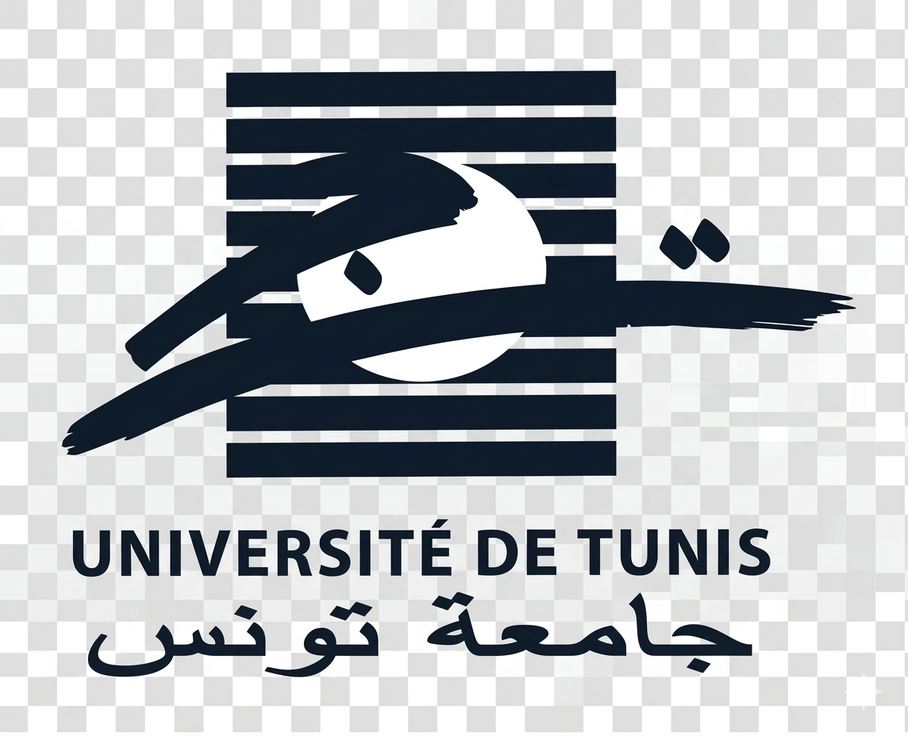
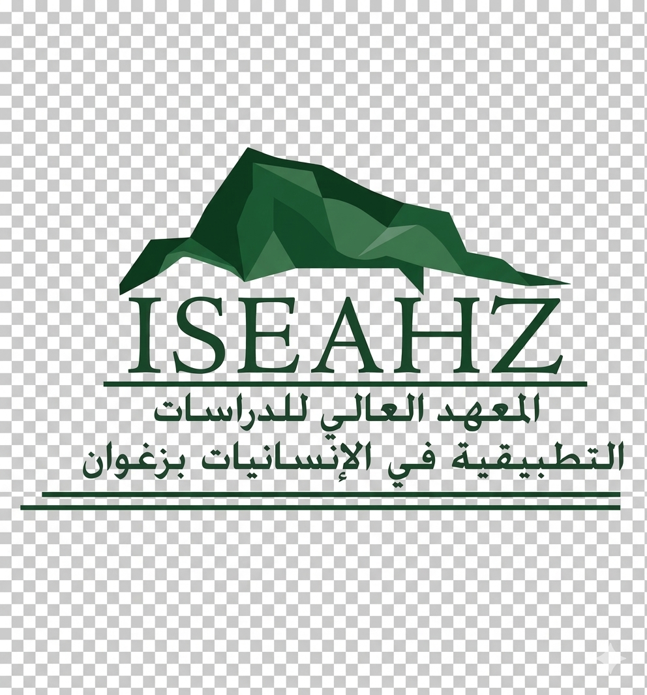

إعداد: مرام الدالي – فريق 07
هل تستطيع إقناع الآخرين برأيك؟ اكتشف قوة الحجاج وأساليب الإقناع المنطقي
النصّ الجدلي هو نص يناقش قضية خلافية إشكالية تحتمل وجهتي نظر مختلفتين، كل منهما يمكن أن تكون صحيحة، وتتضمن أفكاراً وأدلة وحججاً. يتبنّى كل طرف رأياً يدافع عن فكرته بطريقة منطقية مستندة إلى أسس سليمة مع تقديم بدائل وحلول للمشكلة.
تدريب القارئ على تحليل الآراء ونقدها بموضوعية.
تقديم الأدلة بطريقة منظمة ومتسلسلة.
إدارة النقاش وتبادل الآراء باحترام.
إقناع المتلقي بوجهة النظر بأسلوب منطقي.
عرض القضية الخلافية
الحجج والآراء المتعددة
استنتاج أو حلول
"التربية داخل البيت تشكّل أساس الوقاية، والرقابة الأسرية تساعد على اكتشاف أي خطر."
حجة عقلية"القوانين الصارمة والمؤسسات التربوية تنشر التوعية وتحمي الطفل."
حجة واقعية🔍 القضية الإشكالية: من المسؤول عن حماية الطفل من التحرش؟ الأهل أم المجتمع؟ النص يقدم حلًا تشاركيًا.
النص الجدلي هو نص يقوم على مناقشة قضية خلافية بين رأيين متعارضين، يهدف إلى إقناع القارئ باستخدام الحجج والبراهين المنطقية. يعتمد على مؤشرات لغوية وأدوات الربط، ويدرب على النقد والموضوعية.